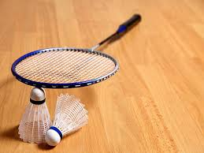

- 

I have incredibly strong interest in travel and sport. I can't remember a time in my life where I haven't been playing sport, or similarly, a time where I wasn't overcome by wanderlust.
Currently I am active in a few of the UCC Clubs - namely badminton, mountaineering and lacrosse.
Badminton is a sport that I have been active in since secondary school, playing it all throughout my six years. It's what I would call my "comfort" sport as it's familiar and I already have a foundation in it, unlike the others, which are all sports that I had taken an interest in but haven't had the chance to try out prior to coming into college.
Mountaineering is a new environment to me, I have always wanted to go hiking and explore as I love nature and it's a great way to see it. Tying into the travel part of my interests, I would love to one day go hiking in different places around the world.
My interest in lacrosse came from hearing about it through my friend who lives in America, where it's a much more established sport. I found similarities in lacrosse and hurling, which I tried out for a little while in primary school, the principles were somewhat the same and so it was took the pressure off learning a completely "new" sport. While lacrosse as a sport is still trying to find it's footing in Europe, the community is there, and the atmosphere on game days is nothing short of addictive. Everyone is so welcoming and eager to learn from and teach each other.
I love travelling, one day I would love to travel to Lake Garda in Italy and hopefully New Orleans. New Orleans is my dream destination as it is the set of one of my all time favourite shows - The Originals. From that show I fell in love with the music, the culture and the history behind the city.